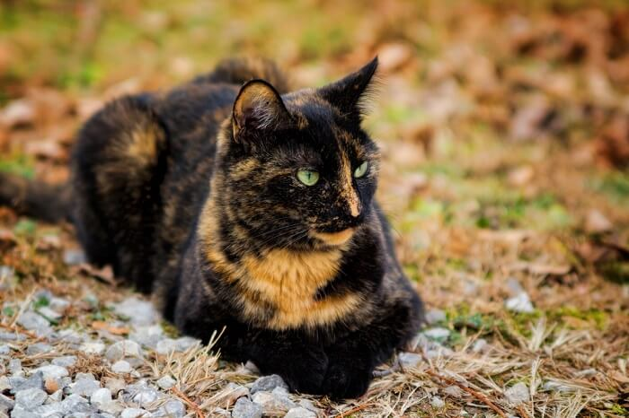

DesaparecidoKira
Gata carey · 4 años
Visto por última vez: Hoy, 08:30
Cada mascota tiene una historia que merece ser compartida.
Activa a la comunidad cercana. Cada mirada cuenta cuando alguien no vuelve a casa.
Mostrando alertas a menos de 5 km de Guadalupe

DesaparecidoGata carey · 4 años
Visto por última vez: Hoy, 08:30
 Desaparecido
Desaparecido
Beagle · 6 años
Visto por última vez: Ayer, 19:15